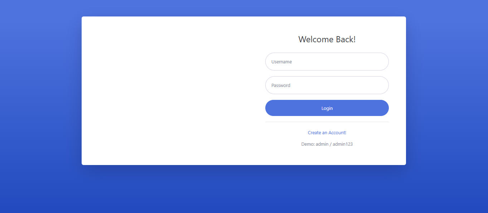
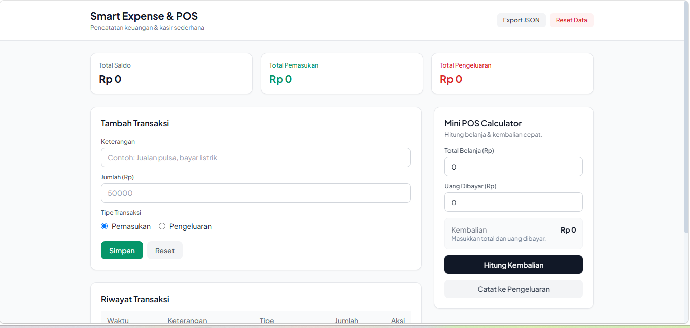

Ibadurrahman
Hasan
Web Developer.
Saya adalah seorang siswa MAKN Ende yang memiliki basic Full-Stack Developer dan mendalami Jurusan Pengembangan Perangkat Lunak & Gim (PPLG). Berkomitmen tinggi, disiplin, serta bertanggung jawab dalam membangun website yang berkualitas, saya memahami bagaimana menggabungkan fungsionalitas dengan kreativitas.

Tentang Saya
Siapa saya dan apa yang saya lakukan
Saya adalah seorang siswa MAKN Ende yang memiliki basic Full-Stack Developer dan mendalami Jurusan Pengembangan Perangkat Lunak & Gim (PPLG). Berkomitmen tinggi, disiplin, serta bertanggung jawab dalam membangun website yang berkualitas, saya memahami bagaimana menggabungkan fungsionalitas dengan kreativitas.
Fokus utama saya adalah serius dan bekerja keras dalam mendalami bidang ini, agar dapat menghasilkan website yang tidak hanya menarik secara visual, tetapi juga memiliki antarmuka yang bersih, intuitif, serta performa yang optimal. Saya selalu bersemangat untuk mempelajari teknologi baru demi menghadapi tantangan di dunia industri.
3+
Tahun Pembelajaran4+
Proyek Utama100%
Siap PKLKeahlian Teknis
Skil sekarang yang saya andalkanFrontend
Backend
Tools
Soft Skil
Riwayat Pendidikan
Jejak akademis sayaPengembangan Perangkat Lunak & Gim
Pendidikan Menengah Pertama
Pendidikan Dasar
Pendidikan Anak Dini (TK)
Prestasi & Penghargaan
Pencapaian dan pengalaman kepemimpinan sayaJuara 1 MTQ Cabang Cerdas Cermat
Tingkat Provinsi - 2026
Meraih Juara 1 tingkat provinsi dalam cabang Cerdas Cermat setelah melalui persaingan ketat.
Ketua Asrama MAKN Ende
MAKN Ende - 2026
Diangkat sebagai Ketua Asrama untuk memimpin, menjaga kedisiplinan, dan mengayomi kehidupan asrama.
Anggota Paskibraka Kabupaten Ende
Kabupaten Ende - 2025
Terpilih dan bertugas sebagai Anggota Paskibraka tingkat Kabupaten Ende dengan tingkat kedisiplinan tinggi.
Proyek Terbaru
Beberapa hasil karya nyata yang telah saya bangun
Bad_Laundry — Web-Based Laundry Management System
Bad_Laundry adalah sistem manajemen laundry berbasis web menggunakan PHP Native, MySQL, dan Bootstrap 5 yang mempermudah pencatatan transaksi, kelola data pelanggan, serta pemantauan status pesanan secara real-time.

Mitra Haidar Cell — Web-Based Transaction & POS System
Mitra Haidar Cell adalah sistem informasi transaksi dan POS berbasis web menggunakan PHP Native dan MySQL yang mempermudah pencatatan penjualan pulsa, paket data, serta kelola data stok barang secara terstruktur.

E-Perpus MTsN Nagekeo — Library Management System
E-Perpus MTsN Nagekeo adalah sistem manajemen perpustakaan sekolah berbasis web menggunakan PHP, MySQL, dan SB Admin 2 yang mempermudah sirkulasi peminjaman buku, pendataan anggota, serta pembuatan laporan secara cepat.

Smart Expense — Client-Side Expense & POS Calculator
Smart Expense adalah aplikasi kalkulator transaksi dan pencatatan keuangan berbasis web interaktif menggunakan HTML, CSS, dan JavaScript dengan fitur LocalStorage browser untuk menyimpan data tanpa server backend.
Alur Pengerjaan Projek
Pendekatan terstruktur yang saya gunakan dalam membangun setiap projek website.
Perencanaan & Riset
Menganalisis kebutuhan projek, menentukan struktur halaman, serta menyusun alur pengguna (wireframe).
Desain UI/UX
Merancang antarmuka visual yang modern, responsif, dan mudah digunakan sebelum masuk ke proses koding.
Pengembangan (Coding)
Menulis kode HTML, CSS, dan JavaScript secara rapi untuk membangun fungsionalitas dan tampilan web.
Pengujian & Rilis
Melakukan uji coba antarmuka di berbagai perangkat (responsive test) lalu mempublikasikan projek ke server/hosting.
Hubungi Saya
Mari diskusikan proyek Anda selanjutnyaIbadurrahman Hasan
Saya selalu terbuka untuk berdiskusi tentang pengembangan Website.
Respon Cepat?
Chat via WhatsApp